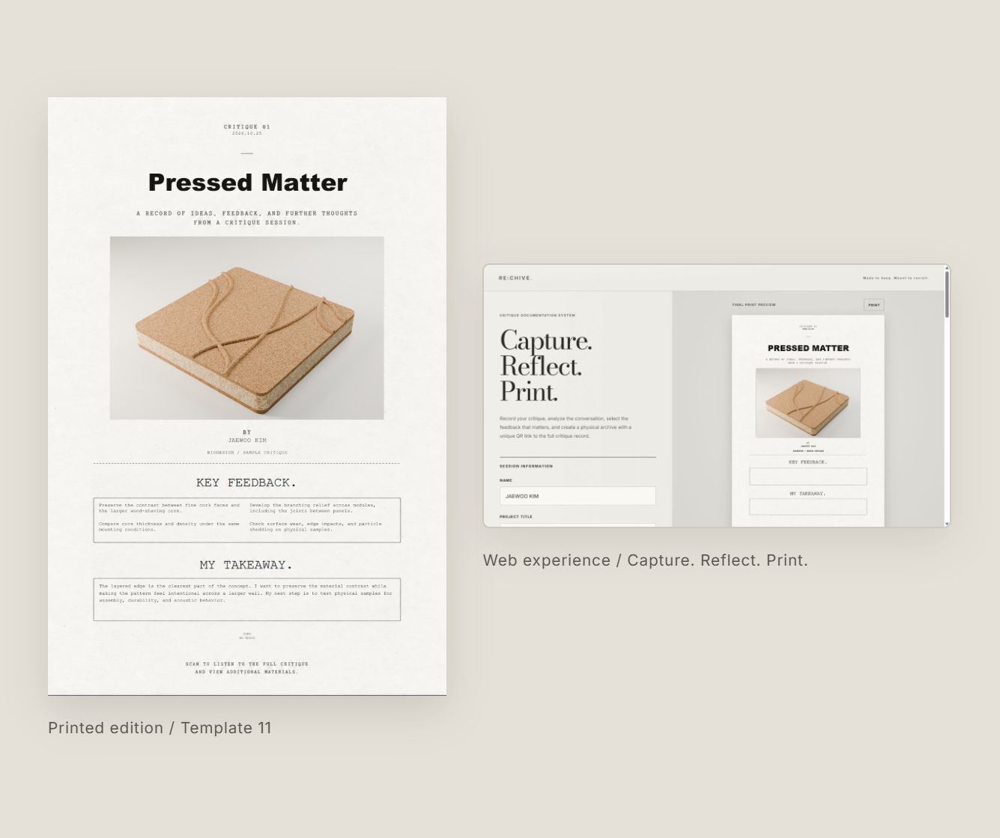
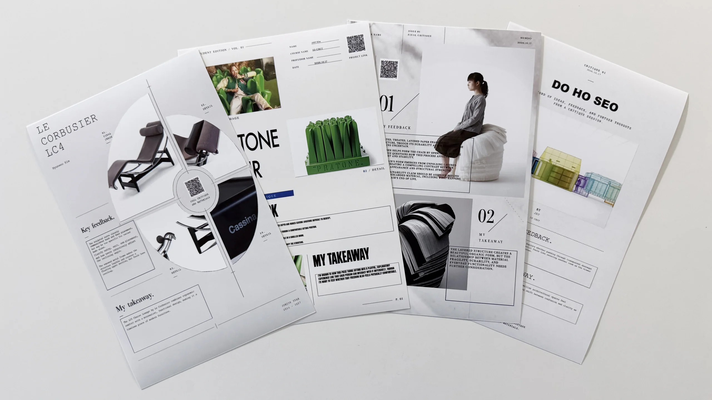
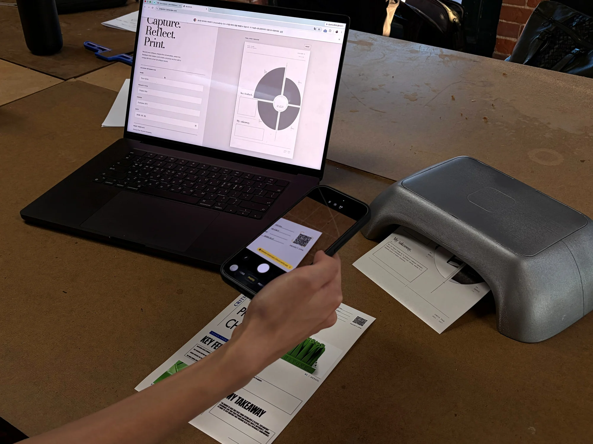
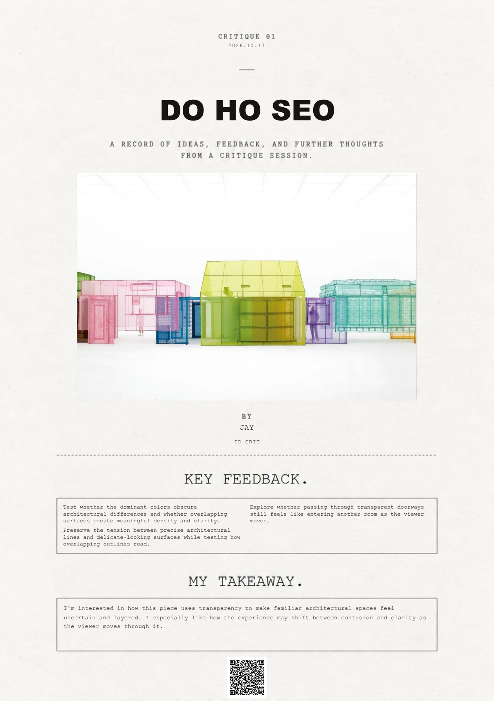
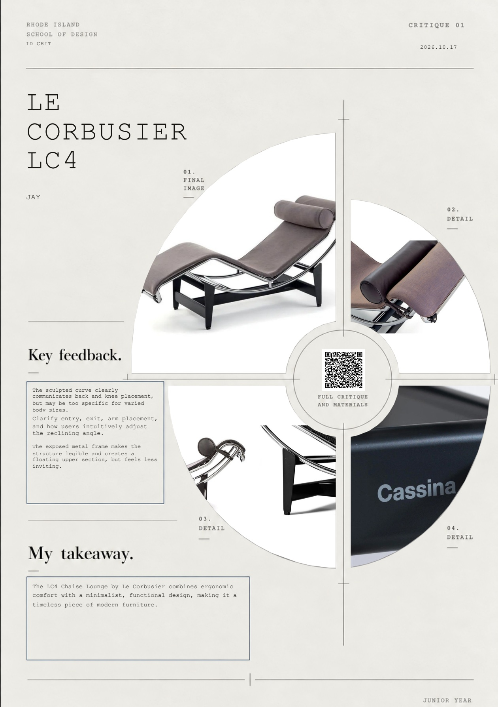
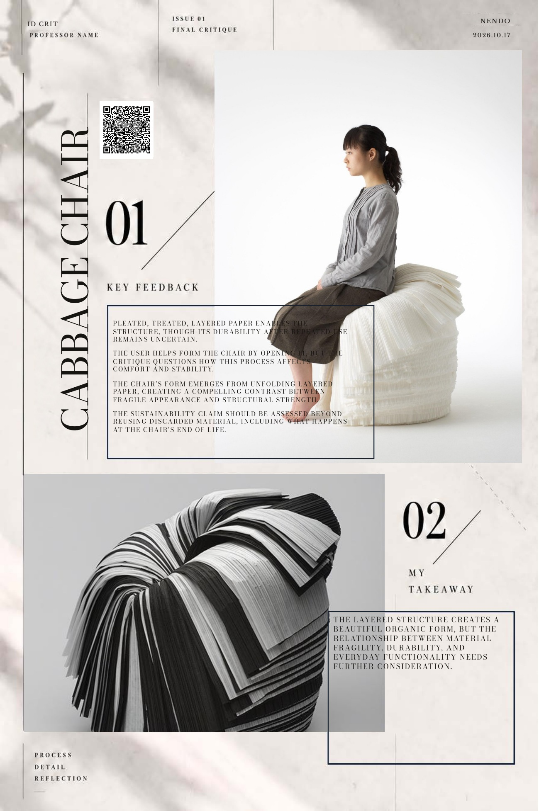
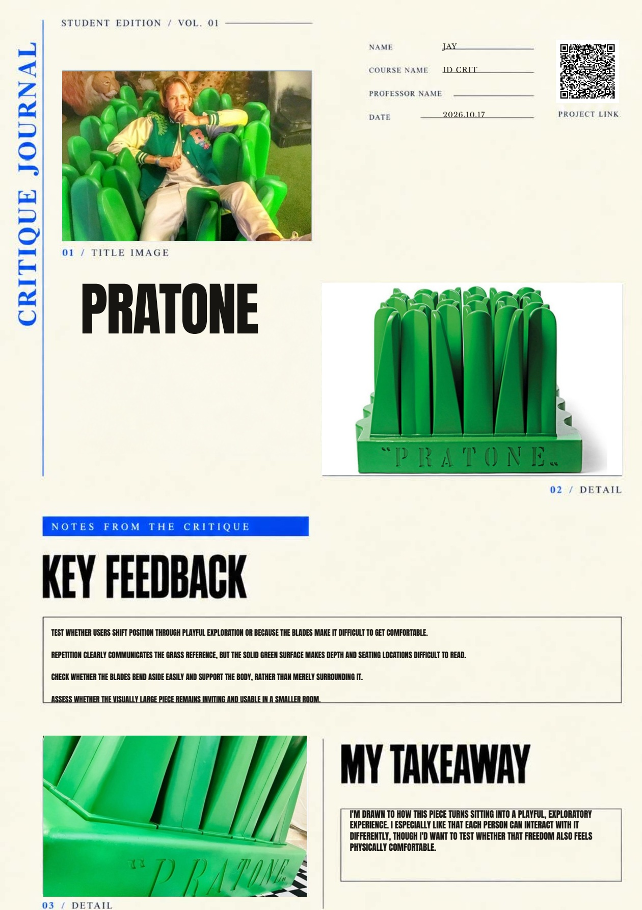
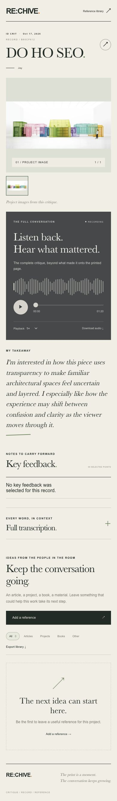

RE:CHIVE
A critique recording and archiving tool that connects spoken feedback, personal notes, and printed project records. Originally developed as CRITIQUE PRINT.

Open Website ↗A small print.
A lasting reminder.
The starting point was the four-cut photo booth: a brief experience becomes a small keepsake, pinned to a bedroom wall or kept beside a desk. Seeing it again brings the moment back into everyday life.
I wanted critique to have that same presence. A printed page brings feedback out of a passing conversation and into a student's room, where it can be revisited like a memory of learning.

A memory of how you thought.
A starting point for what comes next.
Placed on a wall or beside a desk, the print is intended to invite small moments of reflection: What did I hear? What has changed? What should I try next? Returning to those questions can turn a remembered critique into a foundation for the next iteration.
From conversation to a lasting record
RE:CHIVE brings critique recordings, transcripts, and feedback into a project archive. Students can revisit a discussion and collect the ideas they want to carry into their next iteration.
A connection between print and digital
Choose from 18 print templates and combine project photographs, names, dates, feedback, and personal notes. A QR code connects the printed page to the digital critique archive and its materials.
The ready-made layouts make it possible to create a personal record without first learning a layout tool. Choose a format, add the content, and print: the aim is to make keeping feedback feel simple.
Make it physical.
Keep it connected.
Record a critique, review the transcript and feedback, add personal notes, and arrange the project in a print template. Keep the printed record alongside the work and return to the archive through its QR code.
The page holds the parts you want to keep in view. Scanning its QR code brings the fuller conversation back when you want to look more closely.

One conversation. Different editions.
Example layouts showing project images, key feedback, personal notes, and a QR link to the digital archive.




Scan. Listen. Revisit.
The QR code connects the printed edition to a digital archive with project images, the critique recording, personal takeaways, and references.
Full mobile archive view opened from an example QR code.
